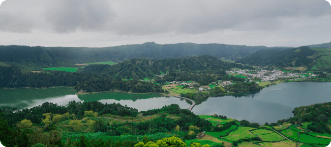
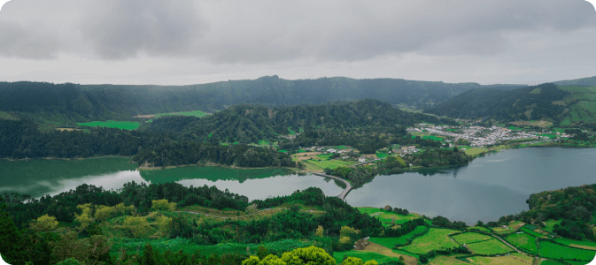

Our Popular Tours
Walking through the streets of Florence means walking through 2000 years of history. Find out what made this city so amazing and discover its secrets! Do you want to know why the florentines constructed the biggest church.
- After a good introduction, you should put the main stops of your guruwalk, so that travelers can get an idea of what they are going to see.
- This list can indeed convince travelers to book as they could have these sites on their list of things to see in your city.
- It’s not necessary to put all the stops (especially those that are less known). Otherwise, it can make the tour description very long.
Walking through the streets of Florence means walking through 2000 years of history. Find out what made this city so amazing and discover its secrets! Do you want to know why the florentines constructed the biggest church.


 
